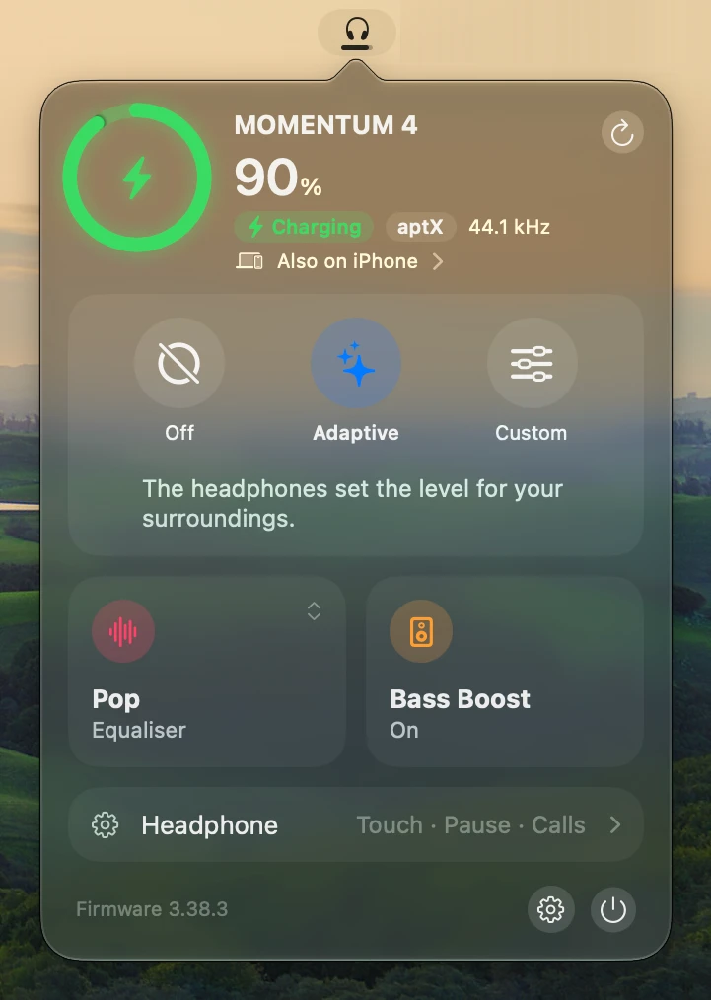
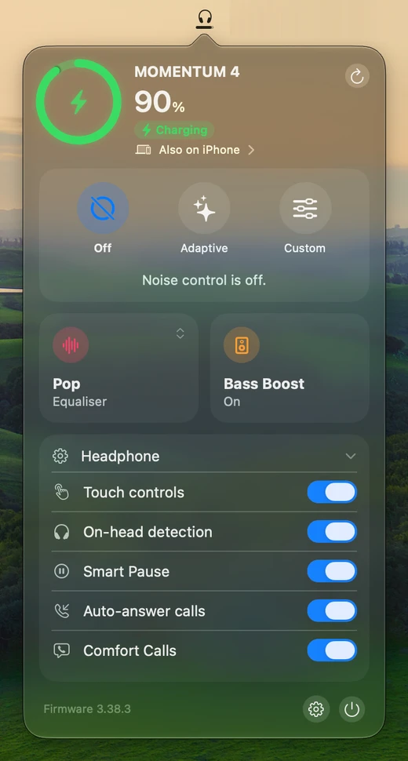
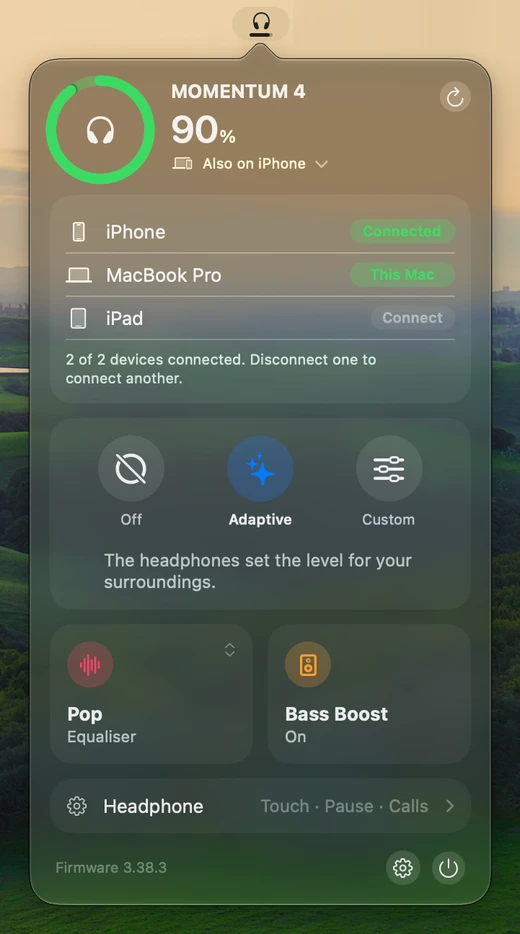
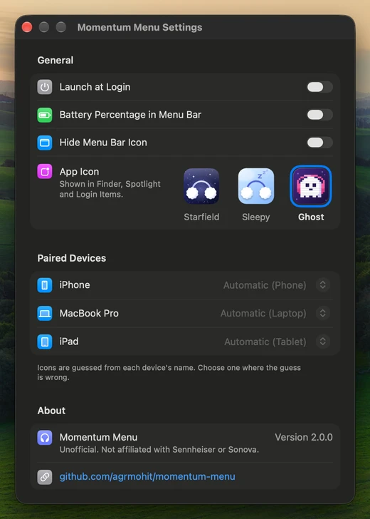
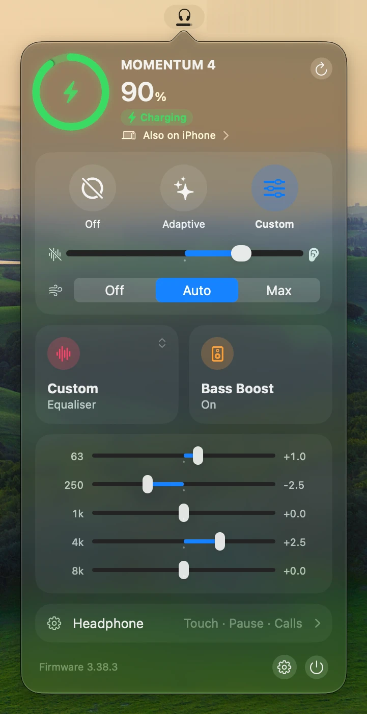
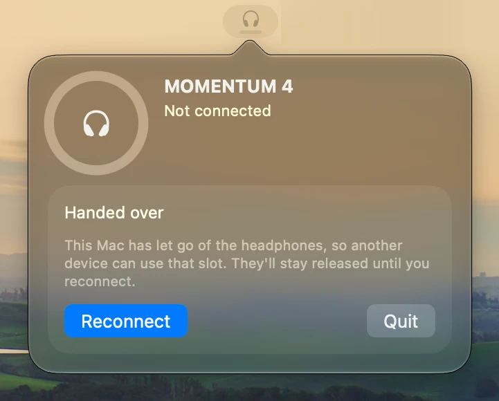

Momentum Menu
A macOS menu bar app for the Sennheiser MOMENTUM 4.
|
 Charging  Headphone settings |
 Paired devices  Settings |
 Equaliser bands  Disconnected |
Caution
Unofficial, reverse-engineered, and not notarised. Use it at your own risk.
- Unofficial: not made, endorsed or supported by Sennheiser or Sonova.
- Reverse-engineered: the headphones' control protocol is undocumented. Every command comes from community captures, and a firmware update can change what one does.
- Hazardous ids: some ids reset the link, power the headphones off or erase pairings. The app sends only commands on its allow-list. If you change it, never send anything in
0x06xxbut the battery read:0x0605with an empty payload powered them off three times. See Protocol notes. - Not notarised: the app is ad hoc signed, not signed by an Apple developer or checked by Apple, so macOS blocks its first launch. Download says how to verify a release and open it.
Download
Releases carry a DMG built by GitHub Actions from the tagged commit, with a build provenance attestation and a SHA-256 file. Needs macOS 26 on Apple silicon.
gh attestation verify MomentumMenu-*.dmg -R agrmohit/momentum-menu
The app is ad hoc signed, not notarised, so macOS blocks its first launch whatever the attestation says. Open it once, then choose Open Anyway in System Settings > Privacy & Security, or run xattr -dr com.apple.quarantine /Applications/MomentumMenu.app.
Build and run
Needs macOS 26 and Xcode 26 (the Command Line Tools lack the SwiftUI macro plugin and XCTest).
make install # builds, signs ad hoc, installs to ~/Applications
make check # clean build with warnings as errors, then the tests; what CI runs
make # every target and variable
- The ad hoc signature changes on every build, so macOS may ask for Bluetooth permission again after an install.
- Left click for the popover. Right click for Settings, Refresh, Disconnect and Quit.
- The line under the battery opens the paired devices, to connect or disconnect one. Settings sets each device's icon.
- For screenshots,
defaults write com.agrmohit.momentummenu demoDeviceNames -bool YESshows stock device names untildefaults deleteand a relaunch. - Settings > App Icon picks Starfield (bundled), Sleepy or Ghost, and the app sets the choice again at launch. A non-default icon adds a Finder attribute that fails
codesign --strict; the plain check passes. - The tests need no hardware.
make testis the quick incremental run; it shows a file's warnings only when it recompiles that file. - A release is a
v*tag on a commit whosebuild.shversion matches and which hasdocs/releases/<tag>.md. CI runs first, then the release workflow builds, attests and publishes the DMG.
Protocol notes
GAIA v3 frames start FF 03 00 LL, then the vendor (0x0495) and the command id. The feature is command >> 9.
| What | Ids | Notes |
|---|---|---|
| Subscribe | 0x0007 | The device pushes nothing for a feature until it is registered. The app registers battery, ANC, EQ, transparency, audio (feature 4) and device management (feature 10). |
| Battery | 0x0603 | Steps of 10 only. HFP and Qualcomm's 001D:1A01 give the same steps, so finer is not possible. |
| Codec | 0x0800 read, 0x0880 push | One byte, Smart Control's enum: 0 SBC, 1 AAC, 2 aptX, 3 aptX LL, 5 aptX HD, 8 aptX Adaptive, 9 aptX Lossless, 10 LC3, FF none. 11 is seen but unexplained. |
| Sample rate | 0x089A push | u32 big-endian Hz. Covers whichever device is streaming. |
| Noise mode table | 0x1A00 | Adaptive is written as an [id, value] pair, or the whole table where the pair is rejected; anti-wind always as the whole table. A write can reset the level, so the app skips no-op writes and reads the level back after the rest. |
| EQ and bass boost | 0x10xx | Firmware 3.x only; 2.x rejects them with 0x05. |
| Paired devices | 0x1400-0x1409, 0x1484 push | Count, own index, limit (2), then [index, priority, connected, name, 00] per index. Addressed by index only, and indexes can reorder, so the list is re-read before any connect (0x1402) or disconnect (0x1403). |
Safety lives in Commands.swift:
- An allow-list of every id the app sends, with exact payload rules. Anything else is refused before it reaches the radio.
- A deny-list underneath:
0x0607,0x0613and0x0685drop the link.0x0801,0x0805and0x0817are setters the app does not use. 0x1403disconnects a paired device on firmware 3.38.3 but erased a pairing on 2.13.42, so it is refused below 3.38.3. The deletes0x1405and0x1406are never sent.- Frames for any vendor other than
0x0495are refused. - Never sweep id ranges against real headphones.
Credits
- andr3-santos/momentum-menu: the repo this is forked from.
- DanSmith888/omarchy-momentum4:
PROTOCOL.md, the presets and the hazard list. - gjabell/momentumctl: frame format and the captured test vectors.
- Tumult1337/momentum4-control: the GAIA SDP service UUID, EQ payloads, and the multipoint commands and captures.
- stefanfmeyer/smart-connect-bt-audio: GAIA over BLE and cross-checked ids.
Not affiliated with Sennheiser or Sonova.